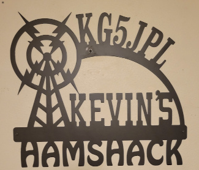

KG5JPL
Amateur Radio Operator

I
am Kevin Canady, KG5JPL, Amateur Radio Operator since 2015.
I hold an Amateur Extra class license. I operate mainly on VHF/UHF in
the Dallas,TX area.
I am a member of the
My Base Station equipment:
- HF
- ICOM 7300
- Hustler 6BTV ground mounted Vertical
- 40 meter dipole, inverted V configuration. Center about 30', ends about 10' above ground level.
- VHF/UHF
- Yaesu 8900 Quad Band
- Diamond X50A Dual Band Vertical
- Digital
- Signalink USB
- Winlink Express on a Windows 10 laptop
My Mobile equipment:
- Truck
- Yaesu 8900
- Diamond 770 dual band antenna
- NMO bed stake pocket mount
My Go Box:
- Gator Box 6U case
- Kenwood 480SAT
- ICOM 2350H dual band
- 20 Amp Hour LifePo battery
- Tram dual band VHF/UHF antenna
- Length adjustable dipole built from bare flex wire and washing line reels for HF, 2m thru 20m
- 4' Aluminum military poles for tempory antenna mast
Click Here To Contact Me